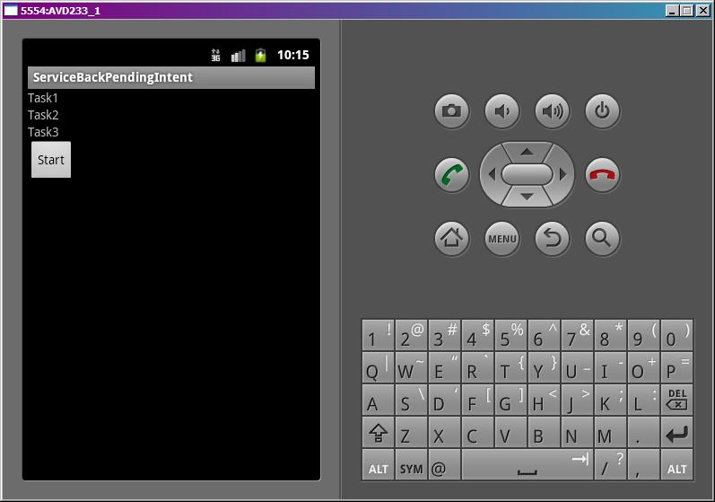
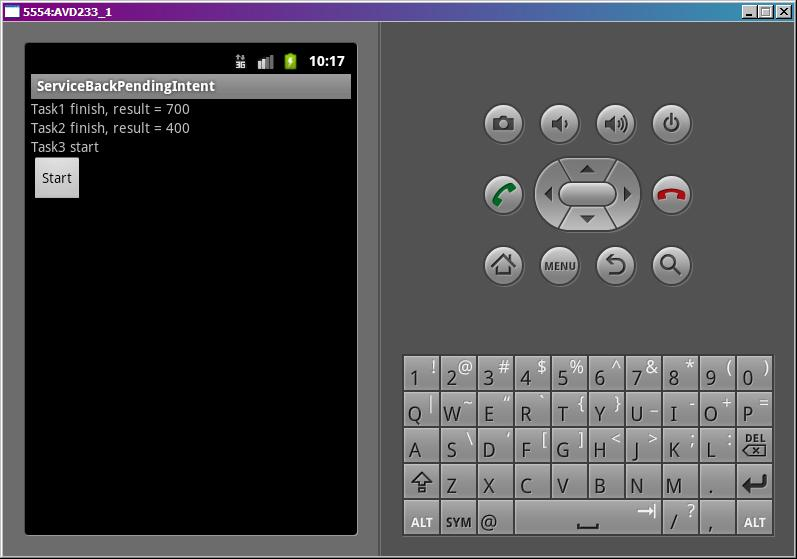

В этом уроке:
- получаем из сервиса результат с помощью PendingIntent
В прошлых уроках мы стартовали сервисы, передавали им данные, но ничего не получали обратно в вызывающее Activity. Но это возможно, и существует несколько способов. В этом уроке рассмотрим PendingIntent.
Я особо не буду вдаваться в объяснение, что такое PendingIntent и что он умеет - урок не о нем. Я покажу, как с его помощью можно в Activity получать результаты работы сервиса.
Схема такая:
- в Activity создаем PendingIntent с помощью метода createPendingResult
- кладем этот PendingIntent в обычный Intent, который используем для старта сервиса и вызываем startService
- в сервисе извлекаем PendingIntent из полученного в методе onStartCommand объекта Intent
- когда нам необходимо передать результаты работы из сервиса в Activity, вызываем метод send для объекта PendingIntent
- эти результаты из сервиса ловим в Activity в методе onActivityResult
Т.е. фишка PendingIntent здесь в том, что он содержит некую связь с Activity (в котором он был создан) и, когда вызывается метод send, он идет в это Activity и несет данные, если необходимо. В общем, этакий почтовый голубь, который точно знает, как ему вернуться домой.
Схема в целом несложная. Попробуем нарисовать пример по ней. У нас будет приложение, которое будет отправлять в сервис на выполнение три задачи. А сервис будет информировать, когда он начал каждую задачу выполнять, когда закончил и с каким результатом. Все это будем выводить на экран Activity.
Кстати, чтобы легче было воспринимать это все, замечу, что алгоритм очень похож на работу startActivityForResult. Только там мы взаимодействуем не с сервисом, а с Activity. Если подзабыли, посмотрите уроки 29 и 30. Воспринимать текущий материал будет гораздо легче.
Создадим проект:
Project name: P0951_ServiceBackPendingIntent
Build Target: Android 4.0
Application name: ServiceBackPendingIntent
Package name: ru.startandroid.develop.p0951servicebackpendingintent
Create Activity: MainActivity
Добавим в strings.xml строки:
<string name="start">Start</string>Экран main.xml:
<?xml version="1.0" encoding="utf-8"?>
<LinearLayout
xmlns:android="http://schemas.android.com/apk/res/android"
android:layout_width="fill_parent"
android:layout_height="fill_parent"
android:orientation="vertical">
<TextView
android:id="@+id/tvTask1"
android:layout_width="fill_parent"
android:layout_height="wrap_content"
android:text="">
</TextView>
<TextView
android:id="@+id/tvTask2"
android:layout_width="fill_parent"
android:layout_height="wrap_content"
android:text="">
</TextView>
<TextView
android:id="@+id/tvTask3"
android:layout_width="fill_parent"
android:layout_height="wrap_content"
android:text="">
</TextView>
<Button
android:id="@+id/btnStart"
android:layout_width="wrap_content"
android:layout_height="wrap_content"
android:onClick="onClickStart"
android:text="@string/start">
</Button>
</LinearLayout>Три TextView, в которые будем выводить инфу, поступающую из сервиса. И кнопка старта сервиса.
Создаем класс для сервиса - MyService.java. И пропишем его в манифесте. Пока в нем ничего не кодим.
MainActivity.java:
package ru.startandroid.develop.p0951servicebackpendingintent;
import android.app.Activity;
import android.app.PendingIntent;
import android.content.Intent;
import android.os.Bundle;
import android.util.Log;
import android.view.View;
import android.widget.TextView;
public class MainActivity extends Activity {
final String LOG_TAG = "myLogs";
final int TASK1_CODE = 1;
final int TASK2_CODE = 2;
final int TASK3_CODE = 3;
public final static int STATUS_START = 100;
public final static int STATUS_FINISH = 200;
public final static String PARAM_TIME = "time";
public final static String PARAM_PINTENT = "pendingIntent";
public final static String PARAM_RESULT = "result";
TextView tvTask1;
TextView tvTask2;
TextView tvTask3;
/** Called when the activity is first created. */
@Override
public void onCreate(Bundle savedInstanceState) {
super.onCreate(savedInstanceState);
setContentView(R.layout.main);
tvTask1 = (TextView) findViewById(R.id.tvTask1);
tvTask1.setText("Task1");
tvTask2 = (TextView) findViewById(R.id.tvTask2);
tvTask2.setText("Task2");
tvTask3 = (TextView) findViewById(R.id.tvTask3);
tvTask3.setText("Task3");
}
public void onClickStart(View v) {
PendingIntent pi;
Intent intent;
// Создаем PendingIntent для Task1
pi = createPendingResult(TASK1_CODE, null, 0);
// Создаем Intent для вызова сервиса, кладем туда параметр времени
// и созданный PendingIntent
intent = new Intent(this, MyService.class).putExtra(PARAM_TIME, 7)
.putExtra(PARAM_PINTENT, pi);
// стартуем сервис
startService(intent);
pi = createPendingResult(TASK2_CODE, null, 0);
intent = new Intent(this, MyService.class).putExtra(PARAM_TIME, 4)
.putExtra(PARAM_PINTENT, pi);
startService(intent);
pi = createPendingResult(TASK3_CODE, null, 0);
intent = new Intent(this, MyService.class).putExtra(PARAM_TIME, 6)
.putExtra(PARAM_PINTENT, pi);
startService(intent);
}
@Override
protected void onActivityResult(int requestCode, int resultCode, Intent data) {
super.onActivityResult(requestCode, resultCode, data);
Log.d(LOG_TAG, "requestCode = " + requestCode + ", resultCode = "
+ resultCode);
// Ловим сообщения о старте задач
if (resultCode == STATUS_START) {
switch (requestCode) {
case TASK1_CODE:
tvTask1.setText("Task1 start");
break;
case TASK2_CODE:
tvTask2.setText("Task2 start");
break;
case TASK3_CODE:
tvTask3.setText("Task3 start");
break;
}
}
// Ловим сообщения об окончании задач
if (resultCode == STATUS_FINISH) {
int result = data.getIntExtra(PARAM_RESULT, 0);
switch (requestCode) {
case TASK1_CODE:
tvTask1.setText("Task1 finish, result = " + result);
break;
case TASK2_CODE:
tvTask2.setText("Task2 finish, result = " + result);
break;
case TASK3_CODE:
tvTask3.setText("Task3 finish, result = " + result);
break;
}
}
}
}В onCreate мы находим TextView и присваиваем им первоначальный текст. Для каждой задачи свой TextView.
В onClickStart мы создаем PendingIntent методом createPendingResult. На вход методу передаем только код запроса – можно считать это идентификатором. По этому коду мы потом будем определять, какая именно задача вернула ответ из сервиса. Два остальных параметра – это Intent и флаги. Нам они сейчас не нужны, передаем соответственно null и 0. (Выяснилось, что в 4-й версии Андроид не прокатывает использование null вместо Intent. Поэтому можно создать пустой Intent и использовать его.)
Далее создаем Intent для вызова сервиса MyService, помещаем туда параметр времени (который будем использовать для паузы в сервисе) и PendingIntent. После чего, отправляем это все в сервис.
Аналогичные действия производим для Task2 и Task3.
В onActivityResult проверяем, какой тип сообщения пришел из сервиса.
Если о том, что задача начала работу (STATUS_START), то определяем, какая именно задача, и пишем об этом в соответствующий TextView.
А если о том, что задача завершена (STATUS_FINISH), то читаем из Intent-а результат выполнения, определяем, какая именно задача, и пишем инфу об этом в соответствующий TextView.
Всю инфу о поступающих сообщениях пишем в лог.
Как вы понимаете, коды STATUS_START и STATUS_FINISH, а также результат мы сейчас будем формировать в сервисе.
Кодим сервис MyService.java:
package ru.startandroid.develop.p0951servicebackpendingintent;
import java.util.concurrent.ExecutorService;
import java.util.concurrent.Executors;
import java.util.concurrent.TimeUnit;
import android.app.PendingIntent;
import android.app.PendingIntent.CanceledException;
import android.app.Service;
import android.content.Intent;
import android.os.IBinder;
import android.util.Log;
public class MyService extends Service {
final String LOG_TAG = "myLogs";
ExecutorService es;
public void onCreate() {
super.onCreate();
Log.d(LOG_TAG, "MyService onCreate");
es = Executors.newFixedThreadPool(2);
}
public void onDestroy() {
super.onDestroy();
Log.d(LOG_TAG, "MyService onDestroy");
}
public int onStartCommand(Intent intent, int flags, int startId) {
Log.d(LOG_TAG, "MyService onStartCommand");
int time = intent.getIntExtra(MainActivity.PARAM_TIME, 1);
PendingIntent pi = intent.getParcelableExtra(MainActivity.PARAM_PINTENT);
MyRun mr = new MyRun(time, startId, pi);
es.execute(mr);
return super.onStartCommand(intent, flags, startId);
}
public IBinder onBind(Intent arg0) {
return null;
}
class MyRun implements Runnable {
int time;
int startId;
PendingIntent pi;
public MyRun(int time, int startId, PendingIntent pi) {
this.time = time;
this.startId = startId;
this.pi = pi;
Log.d(LOG_TAG, "MyRun#" + startId + " create");
}
public void run() {
Log.d(LOG_TAG, "MyRun#" + startId + " start, time = " + time);
try {
// сообщаем об старте задачи
pi.send(MainActivity.STATUS_START);
// начинаем выполнение задачи
TimeUnit.SECONDS.sleep(time);
// сообщаем об окончании задачи
Intent intent = new Intent().putExtra(MainActivity.PARAM_RESULT, time * 100);
pi.send(MyService.this, MainActivity.STATUS_FINISH, intent);
} catch (InterruptedException e) {
e.printStackTrace();
} catch (CanceledException e) {
e.printStackTrace();
}
stop();
}
void stop() {
Log.d(LOG_TAG, "MyRun#" + startId + " end, stopSelfResult("
+ startId + ") = " + stopSelfResult(startId));
}
}
}Мы снова используем знакомую по прошлым урокам схему экзекьютора и Runnable.
В onCreate создаем экзекьютор с двумя потоками. Т.е. когда сервис получит три задачи, он сразу начнет выполнять две из них, а третья будет ждать свободного потока.
В onStartCommand вытаскиваем из Intent-а параметр времени для паузы и PendingIntent. Создаем MyRun и передаем ему эти данные. Передаем MyRun экзекьютору на выполнение.
MyRun при запуске вызывает метод send для PendingIntent и передает туда тип сообщения STATUS_START. Это приходит в метод onActivityResult в Activity и на экране мы увидим, как в одном из TextView появится текст, что задача начала работать.
Далее мы эмулируем работу, как обычно, просто поставив паузу. А после этого создаем Intent с результатом работы (просто время * 100), и вызываем немного другую реализацию метода send. Кроме типа сообщения (STATUS_FINISH), мы передаем туда Intent с результатом и указываем контекст. Это идет в метод onActivityResult в Activity и на экране мы увидим, как в одном из TextView появится текст, что задача закончила работу с неким результатом.
Далее вызываем метод stop, в котором вызывается метод stopSelfResult.
Все сохраняем и запускаем приложение.

Жмем Start.
Видим, что две задачи начали работать, т.к. экзекьютор настроен на два потока.
Одна задача завершилась и показала результат, поток освободился, стартует оставшаяся задача.
Еще одна задача завершилась.

Последняя завершилась.
Смотрим логи (у вас может быть немного другая последовательность записей в логах):
MyService onCreate
MyService onStartCommand
MyRun#1 create
MyService onStartCommand
MyRun#2 create
MyRun#1 start, time = 7
MyService onStartCommand
MyRun#3 create
Сервис создался и получил все три вызова.
requestCode = 1, resultCode = 100
MyRun1 начал работать и отправил сообщение об этом: requestCode = TASK1_CODE, resultCode = STATUS_START.
MyRun#2 start, time = 4
requestCode = 2, resultCode = 100
MyRun2 начал работать и отправил сообщение об этом: requestCode = TASK2_CODE, resultCode = STATUS_START.
MyRun#2 end, stopSelfResult(2) = false
MyRun#3 start, time = 6
requestCode = 2, resultCode = 200
requestCode = 3, resultCode = 100
MyRun2 завершил работу и отправил соответствующее сообщение: requestCode = TASK2_CODE, resultCode = STATUS_FINISH. Поток в экзекьюторе освободился и стартует MyRun3. MyRun3 начал работать и отправил сообщение об этом: requestCode = TASK3_CODE, resultCode = STATUS_START.
MyRun#1 end, stopSelfResult(1) = false
requestCode = 1, resultCode = 200
MyRun1 завершил работу и отправил соответствующее сообщение: requestCode = TASK1_CODE, resultCode = STATUS_FINISH.
requestCode = 3, resultCode = 200
MyRun#3 end, stopSelfResult(3) = true
MyRun3 завершил работу и отправил соответствующее сообщение: requestCode = TASK3_CODE, resultCode = STATUS_FINISH.
MyService onDestroy
Последний поступивший вызов выполнил метод stopSelfResult, сервис останавливается.
Изначально хотел пример попроще сделать, но чет увлекся, и получилось посложнее, но и поинтереснее.
Еще раз проговорю, что мы здесь поверхностно использовали PendingIntent и не стали копать его подробно, т.к. урок не о нем. Скоро мы еще раз встретимся с этим объектом, когда будем изучать уведомления (Notifications).